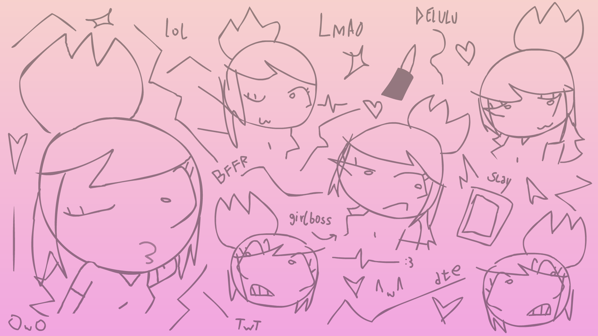
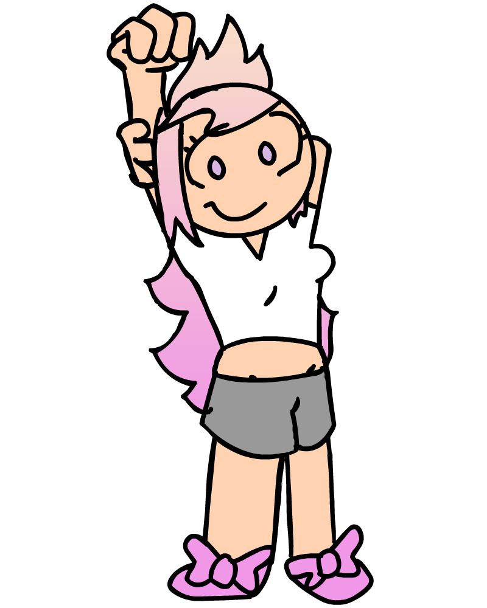

NAME: Alyson
AGE: 15
BIRTHDAY: 01.01
DESCRIPTION: Richest and most popular gal in the Bategen town, is part of the cheerleader team. She's very judgmental and has lots of connections in town. Her young brother is Mike.
VOICE ACTOR: Alyson